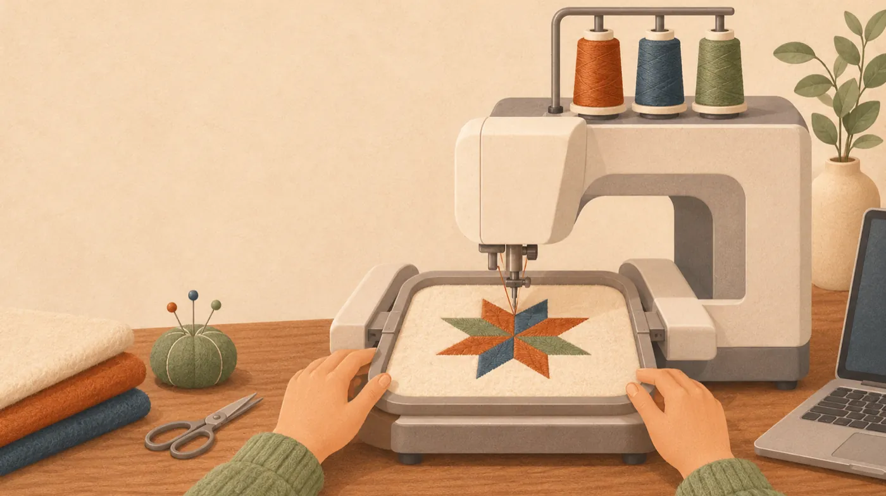
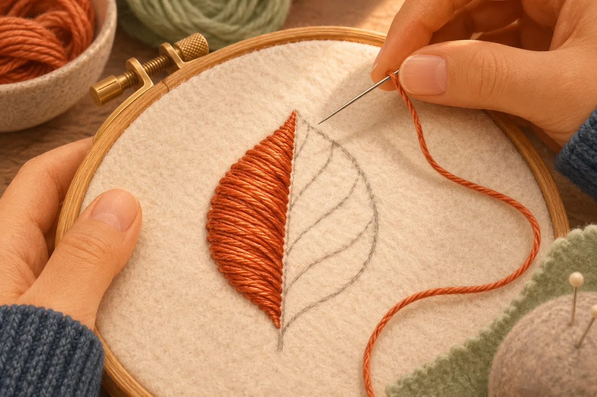
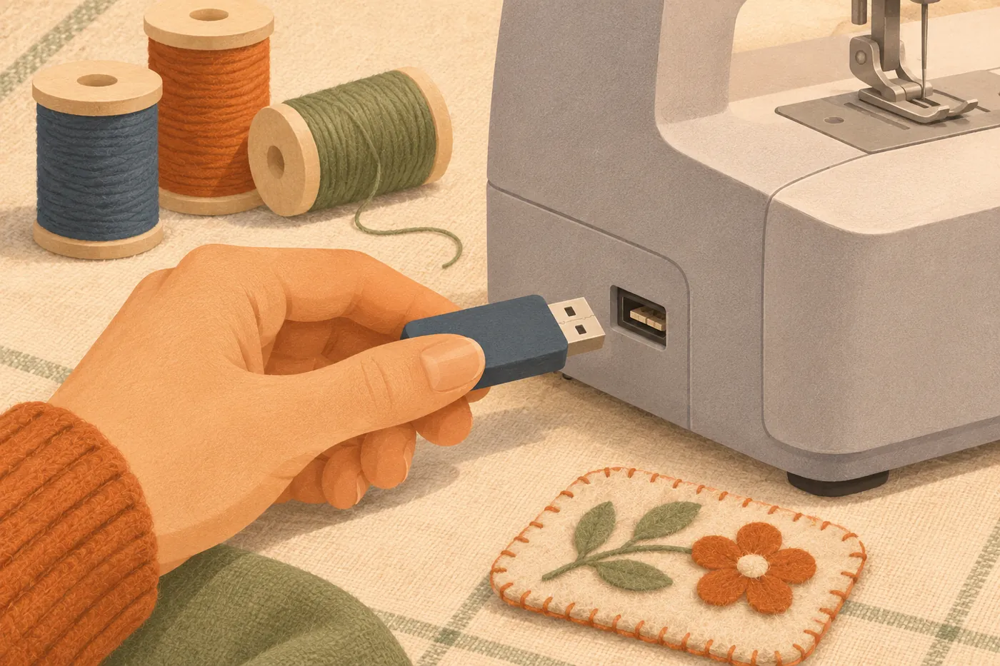
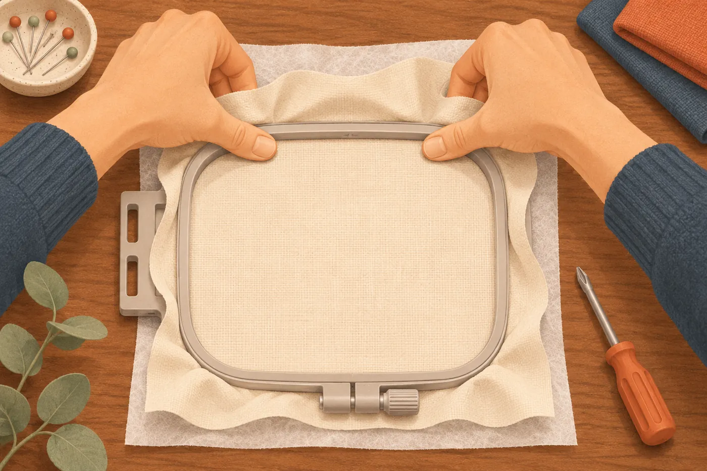

Fortbildung Brother Entrepreneur One (PR1X)
Was beim Erstellen und Übertragen hakt und was dann hilft

Die Maschine liest .pes, .phc, .dst und .pen, aber kein SVG.

Sonst fehlt am anderen Rechner die Schriftart.
Ein Abschnitt, eine Garnfarbe.
Faustregel für Konturen: 2 bis 3 mm.
Sonst sticht die Nadel mehrfach durch dieselbe Stelle.
Maximal 300 × 200 mm, kleiner Rahmen 100 × 100 mm.
Eine Nadel: Nach jeder Farbe wird neu eingefädelt.
CorelDRAW und die Zeichenfläche für Vektoren gehören zu DesignerPlus. In Creator ist deine Grafik eine Vorlage. Fehlt SVG im Dateifilter, nimm ein PNG mit klaren Farben.
Läuft unter Windows. Mac nur mit Intel und Boot Camp.


| Was du siehst | Was du tust |
|---|---|
| Creator bietet SVG nicht an | Als PNG exportieren oder Ink/Stitch nehmen |
| Maschine findet keine Datei | Endung prüfen, FAT32, anderen Stick nehmen |
| Kein Vorschaubild, falsche Farben | Das ist .dst. Als .pes exportieren |
| Muster zu groß | Rahmen wechseln oder neu exportieren |
| Lücken am Rand, Motiv verzogen | Vlies und Spannung prüfen, dann Zugkompensation |
| Nadel bricht | Ausschalten, Bruchstücke suchen, Ursache klären |
Ein kleines Motiv, eine Farbe, 100 × 100-mm-Rahmen.
Alle Schritte stehen auf der Website.
Quellen: Brother-Handbuch PR1X, BERNINA Quick Start Guide und Release Notes V9, Ink/Stitch-Dokumentation. Illustrationen: ChatGPT, stilisiert. · Impressum · Datenschutz